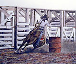

Terry Maddox, a prestigious artist, is well known for his realistic portraits mastering the majestic Northwest. Terry travels throughout the year where his artwork is found in numerous art shows across the United States. His popularity and gifted style earns him top honors.
When Terry is not touring, he spends time at his studio in Oregon, where inspiration continues to flow from his fingers, creating new images of landscapes and nature - So real that you have to blink again to see that it is indeed not a true photograph!